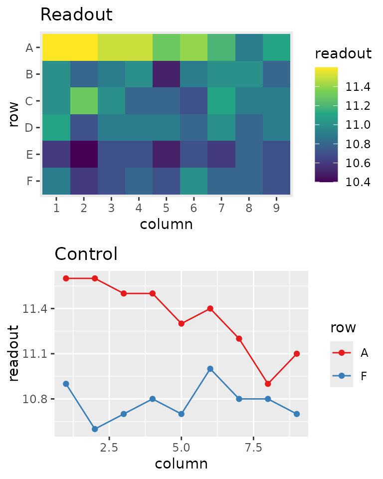

designit: a flexible engine to generate experiment layouts
Juliane Siebourg-Polster, Iakov Davydov, Guido Steiner, Balazs Banfai
Source:vignettes/NCS22_talk.Rmd
NCS22_talk.RmdIntroduction
Examples in this vignette are used in a talk at NCS22.
It uses a subset of the longitudinal_subject_samples
dataset.
data("longitudinal_subject_samples")
dat <- longitudinal_subject_samples %>%
filter(Group %in% 1:5, Week %in% c(1,4)) %>%
select(SampleID, SubjectID, Group, Sex, Week)
# for simplicity: remove two subjects that don't have both visits
dat <- dat %>%
filter(SubjectID %in% (dat %>% count(SubjectID) %>% filter(n == 2) %>% .$SubjectID))
subject_data <- dat %>% select(SubjectID, Group, Sex) %>% unique()Go fully random?
- Could it be sufficient to randomly distribute samples across batches?
- Not necessarily!
- Often sample sizes are too small to avoid grouping by change
- Experimental constraints might not allow for a fully random layout
Gone wrong: Random distribution of 31 grouped subjects into 3 batches turns out unbalanced:

“Block what you can and randomize what you cannot.” (G. Box, 1978)
designit
- Data structure:
BatchContainerclass- R6 object storing:
- Experiment dimensions (cages, plates…)
- Sample annotation
- Scoring functions for sample distribution
- R6 object storing:
- Main function:
optimize_design()- Optimizes the layout with user defined
- Scores for sample distribution
- Optimization protocols
- Sample shuffling functions
- Returns improved design and optimization trace
- Optimizes the layout with user defined
Sample Batching
Setup
- Assign 31 samples to 3 equally sized batches
- Balance by:
- treatment group (higher priority)
- sex (lower priority)
bc <- BatchContainer$new(
dimensions = list("batch" = 3, "location" = 11),
)
bc$scoring_f <- list(
group = osat_score_generator(batch_vars = "batch",
feature_vars = "Group"),
sex = osat_score_generator(batch_vars = "batch",
feature_vars = "Sex")
)
assign_random(bc, subject_data)Batch composition before optimization

bc$get_samples()#> Warning: There was 1 warning in `mutate()`.
#> ℹ In argument: `across(, as.character)`.
#> Caused by warning:
#> ! Using `across()` without supplying `.cols` was deprecated in dplyr 1.1.0.
#> ℹ Please supply `.cols` instead.| batch | location | SubjectID | Group | Sex |
|---|---|---|---|---|
| 1 | 1 | NA | NA | NA |
| 1 | 2 | P32 | 5 | M |
| 1 | 3 | P10 | 3 | F |
| ... | ... | ... | ... | ... |
| 3 | 9 | P31 | 3 | F |
| 3 | 10 | P33 | 5 | M |
| 3 | 11 | P24 | 5 | F |
Optimization
- Assign 31 samples to 3 equally sized batches
- Balance by:
- treatment group (higher priority)
- sex (lower priority)
trace <- optimize_design(
bc,
n_shuffle = 1,
acceptance_func =
~ accept_leftmost_improvement(..., tolerance = 0.01),
max_iter = 150,
quiet = TRUE
)Batch composition after optimization

| batch | location | SubjectID | Group | Sex |
|---|---|---|---|---|
| 1 | 1 | NA | NA | NA |
| 1 | 2 | P01 | 1 | F |
| 1 | 3 | P10 | 3 | F |
| ... | ... | ... | ... | ... |
| 3 | 9 | P29 | 5 | F |
| 3 | 10 | P33 | 5 | M |
| 3 | 11 | P12 | 3 | F |
Plate layouts
Continuous confounding
Assays are often performed in well plates (24, 96, 384)
Observed effects
- Edge effects (bad plate sealing)
- Gradients (non-equal temperature distribution)
- Row / column effects (pipetting issues)
Since plate effects often cannot be avoided, we aim to distribute sample groups of interest evenly across the plate and adjust for the effect computationally.
Setup
- Assume previous batches are 24-well plates
- Within plate optimization & across plate blocking
- Balanced by:
- treatment group (higher priority)
- sex (lower priority)
set.seed(1) #1 #2
bc <- BatchContainer$new(
dimensions = list("plate" = 3, "row" = 4, "col" = 6),
)
assign_random(bc, dat)
#assign_in_order(bc, dat)
plot_plate(bc, plate = plate, row = row, column = col,
.color = Group, title = "Initial layout by Group")
plot_plate(bc, plate = plate, row = row, column = col,
.color = Sex, title = "Initial layout by Sex")
2-step optimization
multi_plate_layout()
- Across plate optimization using osat score as before
- Within plate optimization using distance based sample scoring function
Spatial arrangement
traces <- optimize_multi_plate_design(
bc,
across_plates_variables = c("Group", "Sex"),
within_plate_variables = c("Group"),
plate = "plate", row = "row", column = "col",
n_shuffle = 2,
max_iter = 500 #2000
)
#> 1 ... 2 ... 3 ...#> $osat_across_plates
#>
#> $within_plate_1
Glimpse on more complex application
Goal:
- Assign 3 treatment conditions to 59 animals, representing 2 relevant strains
- Avoid confounding by sex, weight and age
Constraints:
- Cages host ideally 3 animals (preferably 2-5)
- Strain, Sex and Treatment must be homogeneous within a cage
- Don’t put males from different litters same cage; litter mixing is possible for females!
- Average weight and age composition comparable between treatment groups and cages
- Avoid animals with identical ear markings in same cage (if possible)
- Treatment distribution across animal subgroups (if specified) has to be respected
see vignette invivo_study_design for the full story.
Conclusion
- designit aims to be general and adaptable
- One framework to address simple batching as well as complex multi-step procedures
- Easy add-ons: custom scoring-functions, acceptance-criteria and shuffling-procedures can be passed to optimize_design by the user
- Includes functions and vignettes for frequently used layouts such as plates.
Acknowledgements
- Martha Serrano
- Sabine Wilson
- David Jitao Zhang
- Fabian Birzele
- PMDA group for feedback?